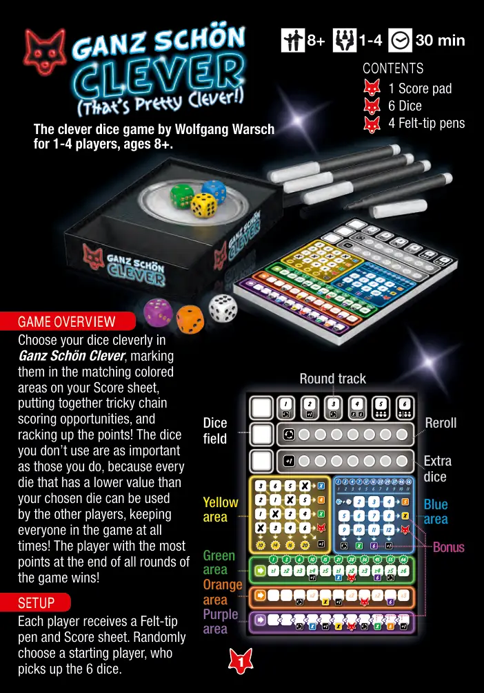
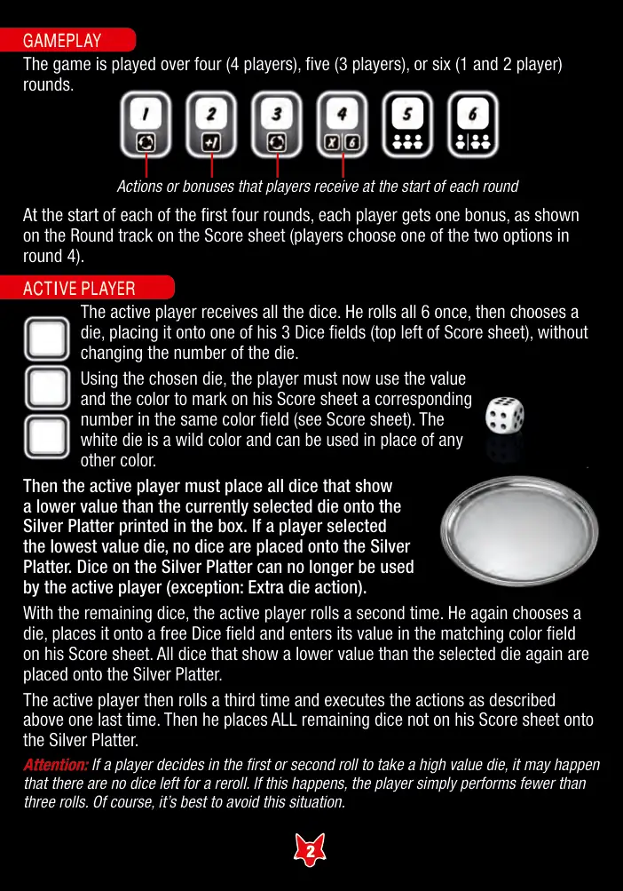
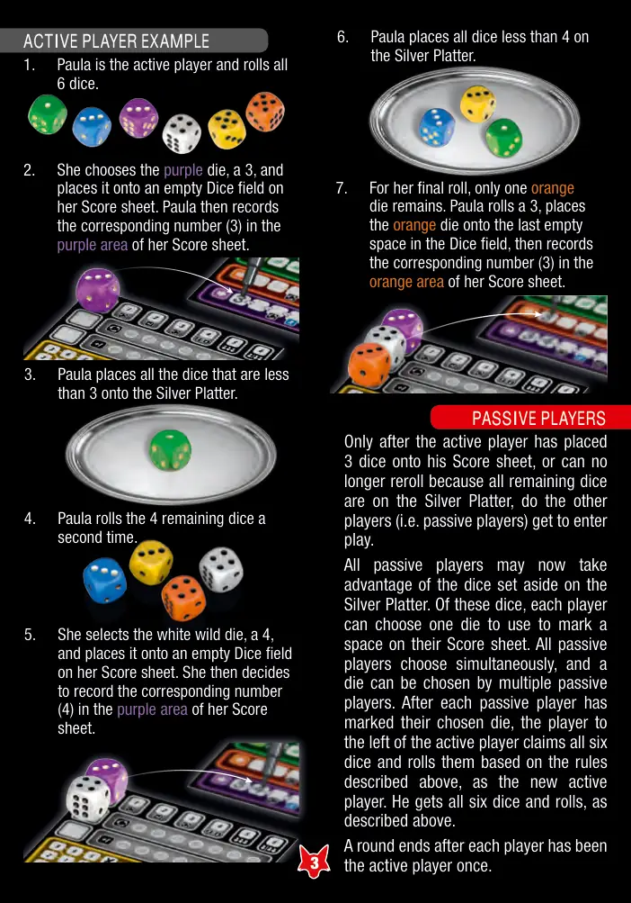
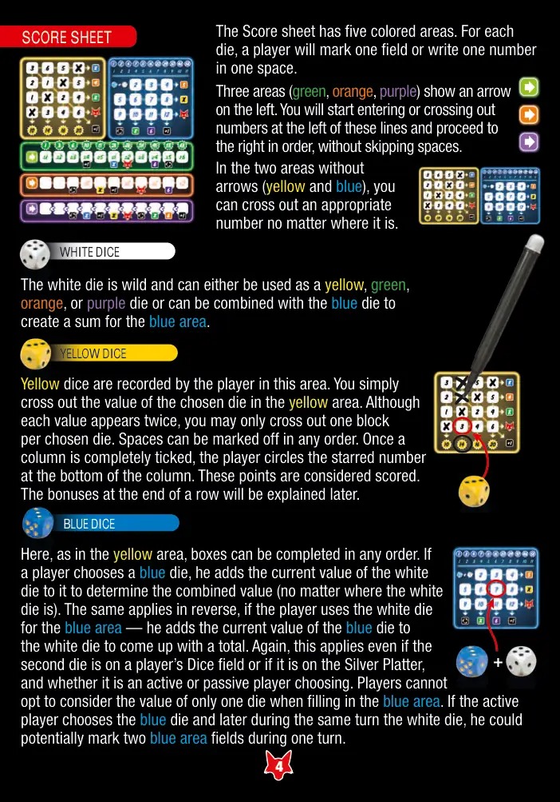
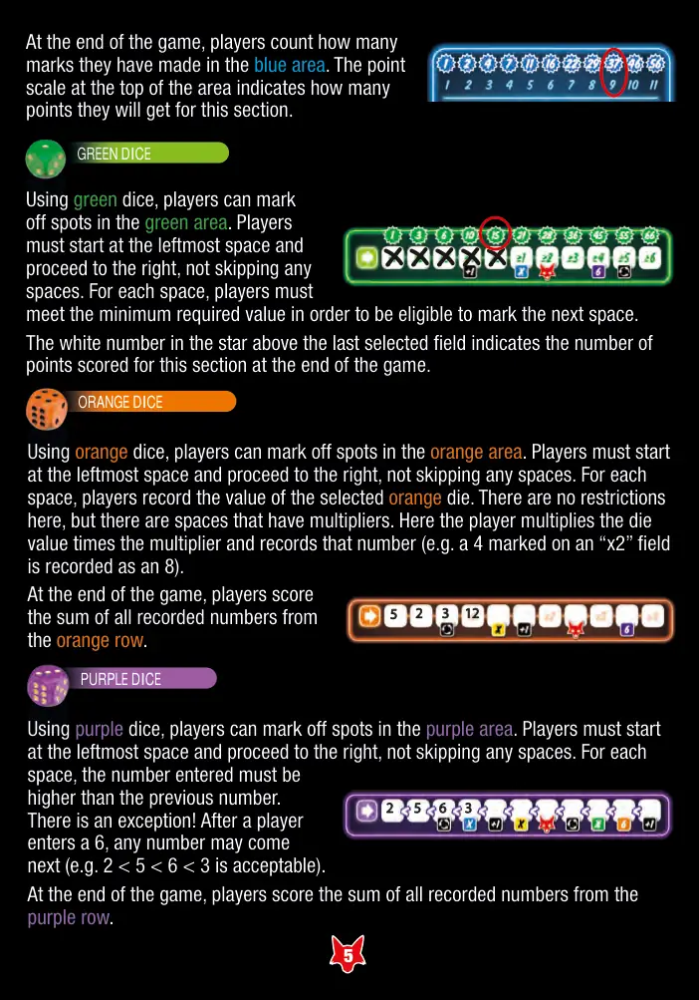
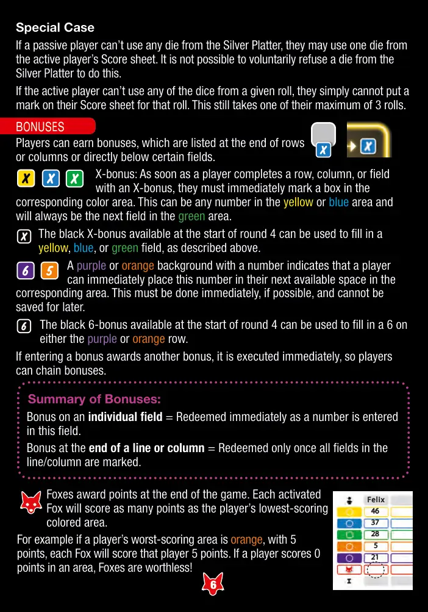
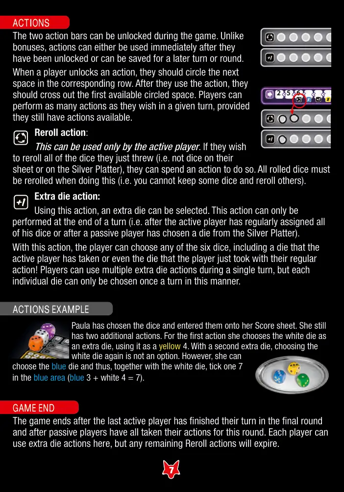
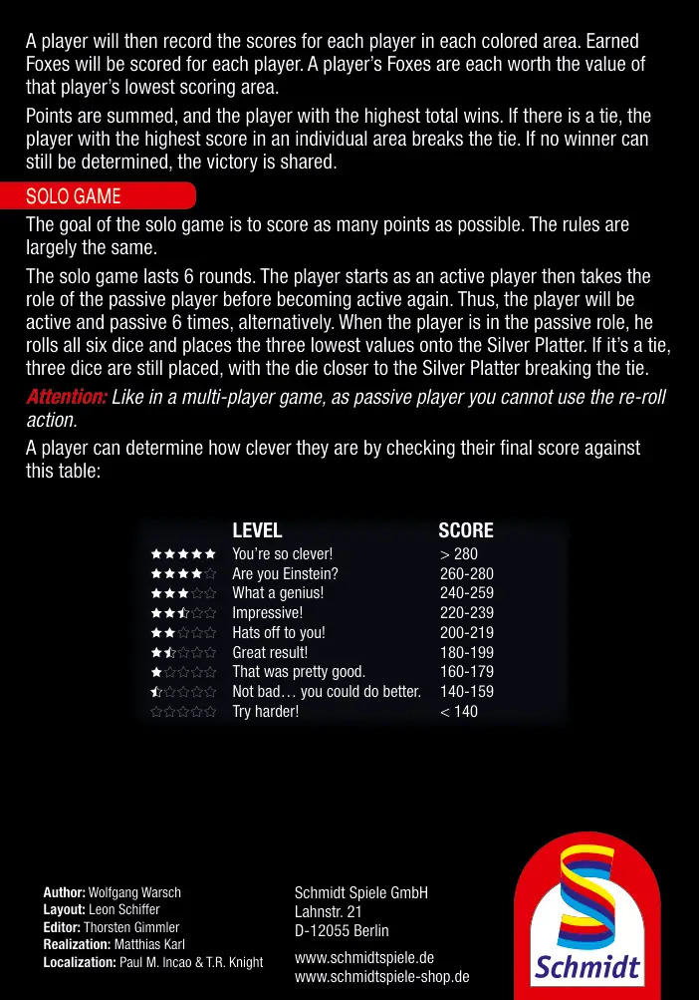

🎲 绝顶聪明
That's Pretty Clever! · 设计：Wolfgang Warsch · Schmidt Spiele 出版 · 1–4 人 · 官方英文规则书全文翻译（8 页 · AI 辅助机翻）
本页收录《绝顶聪明》（That's Pretty Clever!, 2018）的原版官方规则书全部 8 页（底本：Schmidt Spiele 官网产品页（Game instructions 区，GB=英文），88198_That's_pretty_clever_GB.pdf），逐页随图排列，点击任意图片即可放大查看；每页下方默认折叠了该页的 AI 辅助中文机翻对照，需要时可展开。规则内容归 Schmidt Spiele 及版权方所有，收录仅供个人学习查阅。
整理说明：机翻对照按本站术语口径对齐（牌库/手牌/回合/轮/板块/指示物等），PDF 图文混排页的语序可能与原书视觉顺序略有出入；规则细节请一律以页面上方原书页面为准。

📝 第 1 页 AI 机翻对照（点击展开）
8+
1-4
30 分钟
目录
1 记分板
6 骰子
4 毛毡笔
每位玩家获得一支毛毡笔和记分表。随机选择起始玩家，该玩家拿起 6 颗骰子。
游戏概览
设置
轮次轨道
重掷
额外
骰子
骰子
区域
黄色
区域
绿色
区域
橙色
区域
紫色
区域
蓝色
区域
奖励
由 Wolfgang Warsch 设计的聪明骰子游戏
供 1-4 名玩家，年龄 8+。
在 Ganz Schön Clever 中巧妙选择你的骰子，
在记分表上相应颜色的区域进行标记，
组合出棘手的连锁得分机会，
并积累分数！你没使用的骰子和你使用的同样重要，
因为每个比你选择的骰子数值低的骰子
都可以被其他玩家使用，
让所有人始终保持在游戏中！
在游戏所有轮次结束时得分最高的玩家获胜！

📝 第 2 页 AI 机翻对照（点击展开）
游戏流程
游戏进行四轮（4 名玩家）、五轮（3 名玩家）或六轮（1 和 2 名玩家）。
玩家在每轮开始时获得的行动或奖励
在前四轮的每一轮开始时，每位玩家获得一个奖励，如记分表上的轮次轨道所示（第 4 轮玩家从两个选项中选择一个）。
当前玩家获得所有骰子。他将 6 颗骰子全部掷一次，然后选择一颗骰子，将其放置在他记分表上的 3 个骰子区域之一（记分表左上角），不改变骰子的数值。
使用选中的骰子，玩家必须使用其数值和颜色
在记分表上相应颜色的区域标记一个对应数字
（参见记分表）。白色骰子是万能色，可以替代任何其他颜色。
然后当前玩家必须将所有显示数值低于当前选中骰子的骰子
放置在盒子中印刷的银盘上。如果玩家选择了最低数值的骰子，
则没有骰子被放置到银盘上。银盘上的骰子
当前玩家不能再使用（例外：额外骰子行动）。
使用剩余的骰子，当前玩家进行第二次掷骰。他再次选择一颗骰子，
将其放置在一个空闲的骰子区域，并在记分表上相应颜色的区域
输入其数值。所有显示数值低于选中骰子的骰子
再次被放置到银盘上。
然后当前玩家进行第三次掷骰，并如上所述
最后一次执行相应行动。接着他将所有未在记分表上的
剩余骰子全部放置到银盘上。
注意：如果玩家在第一次或第二次掷骰时决定选择一个高数值骰子，
可能会导致没有骰子可用于重掷。如果发生这种情况，
玩家 simply 进行少于三次的掷骰。当然，最好避免这种情况。
当前玩家

📝 第 3 页 AI 机翻对照（点击展开）
主动玩家示例
1.
宝拉是主动玩家，掷出全部
6个骰子。
2.
她选择紫色骰子，点数为3，并将其放置在她的记分表上一个空的骰子格中。然后宝拉在她的记分表紫色区域记录相应的数字（3）。
3.
宝拉将所有小于3的骰子放到银盘上。
4.
宝拉将剩下的4个骰子第二次掷出。
5.
她选择白色万能骰子，点数为4，并将其放置在她的记分表上一个空的骰子格中。然后她决定在记分表的紫色区域记录相应的数字（4）。
6.
宝拉将所有小于4的骰子放到银盘上。
7.
对于她的最后一次掷骰，只剩下一个橙色骰子。宝拉掷出3，将橙色骰子放到骰子格中最后一个空位，然后在她的记分表橙色区域记录相应的数字（3）。
被动玩家
只有当主动玩家在他的记分表上放置了3个骰子，或者无法再重掷因为所有剩余的骰子都在银盘上时，其他玩家（即被动玩家）才能开始游戏。
所有被动玩家现在可以利用银盘上放着的骰子。在这些骰子中，每位玩家可以选择一个骰子用来标记他们记分表上的一个格子。所有被动玩家同时选择，一个骰子可以被多个被动玩家选择。每位被动玩家标记了他们选择的骰子后，主动玩家左边的玩家拿走全部六个骰子并根据上述规则掷骰，作为新的主动玩家。他获得全部六个骰子并进行掷骰，如上所述。
一轮在每位玩家都做过一次主动玩家后结束。

📝 第 4 页 AI 机翻对照（点击展开）
+
计分表有五个彩色区域。对于每个骰子，玩家将标记一个字段或在其中一个空间写一个数字。
三个区域（绿色、橙色、紫色）在左侧显示箭头。你将从这些线条的左侧开始输入或划掉数字，并按顺序向右进行，不能跳过空间。
计分表
在没有箭头的两个区域（黄色和蓝色）中，你可以在任意位置划掉一个合适的数字。
白色骰子是万能骰，可以作为黄色、绿色、橙色或紫色骰子使用，也可以与蓝色骰子组合为蓝色区域的总和。
黄色骰子由玩家在此区域记录。你只需在黄色区域划掉所选骰子的数值。虽然每个数值出现两次，但你每个所选骰子只能划掉一个方块。空间可以按任意顺序标记。一旦一列完全被划掉，玩家在该列底部圈出带星号的数字。这些分数被视为已得分。每行末尾的奖励将在后面解释。
在这里，如同黄色区域一样，方块可以按任意顺序完成。如果玩家选择蓝色骰子，他将白色骰子的当前值加上它来确定组合值（无论白色骰子在哪里）。反之亦然，如果玩家为蓝色区域使用白色骰子——他将蓝色骰子的当前值加上白色骰子得出总数。同样，这适用于第二个骰子在玩家的骰子区域上还是在银盘上，以及是主动玩家还是被动玩家选择。玩家在填写蓝色区域时不能选择只考虑一个骰子的值。如果主动玩家选择蓝色骰子，并在同一回合稍后选择白色骰子，他可以在一个回合内标记两个蓝色区域字段。
黄色骰子
白色骰子
蓝色骰子

📝 第 5 页 AI 机翻对照（点击展开）
在游戏结束时，玩家计算他们在蓝色区域中做了多少标记。该区域顶部的分数表显示了他们在这个部分能获得多少分数。
使用绿色骰子，玩家可以在绿色区域标记位置。玩家必须从最左边的格子开始，向右前进，不能跳过任何格子。对于每个格子，玩家必须达到最低要求值，才有资格标记下一个格子。
最后一个选中的格子上方星星中的白色数字表示游戏结束时这个部分获得的分数。
使用橙色骰子，玩家可以在橙色区域标记位置。玩家必须从最左边的格子开始，向右前进，不能跳过任何格子。对于每个格子，玩家记录所选橙色骰子的数值。这里没有限制，但有些格子有倍数。玩家将骰子值乘以倍数并记录该数字（例如，在"x2"格子上标记的4被记录为8）。
在游戏结束时，玩家计算橙色行中所有记录数字的总和。
使用紫色骰子，玩家可以在紫色区域标记位置。玩家必须从最左边的格子开始，向右前进，不能跳过任何格子。对于每个格子，输入的数字必须高于前一个数字。
有一个例外！在玩家输入6之后，任何数字都可以跟在后面（例如2 < 5 < 6 < 3是允许的）。
在游戏结束时，玩家计算紫色行中所有记录数字的总和。
绿色骰子
橙色骰子
紫色骰子

📝 第 6 页 AI 机翻对照（点击展开）
Felix
特殊情况
如果被动玩家无法使用银托盘中的任何骰子，他们可以使用主动玩家计分表上的一个骰子。不能为了这样做而自愿拒绝使用银托盘中的骰子。
如果主动玩家无法使用某次掷出的所有骰子，他们就不能在该次掷骰后在计分表上做标记。这仍然会消耗他们最多3次掷骰机会中的一次。
奖励
玩家可以获得奖励，奖励位于行或列的末尾，或某些格子的正下方。
X奖励：当玩家完成一行、一列或一个带有X奖励的格子时，他们必须立即在相应颜色的区域标记一个格子。这可以是黄色或蓝色区域的任意数字，并且总是绿色区域的下一个格子。
第4轮开始时可用的黑色X奖励可以用来填写黄色、蓝色或绿色格子，如上所述。
带有数字的紫色或橙色背景表示玩家可以立即将此数字放入相应区域的下一个可用格子中。如果可能，必须立即执行，不能留到以后使用。
第4轮开始时可用的黑色6奖励可以用来在紫色或橙色行上填写一个6。
如果获得奖励会触发另一个奖励，则立即执行，因此玩家可以连锁触发奖励。
奖励总结：
单个格子上的奖励 = 当在该格子中填入数字时立即兑现。
行或列末尾的奖励 = 仅在该行/列的所有格子都被标记后兑现一次。
狐狸在游戏结束时计分。每只激活的狐狸将获得与玩家得分最低的彩色区域相同的分数。
例如，如果玩家得分最低的区域是橙色，有5分，那么每只狐狸将为该玩家获得5分。如果玩家某个区域得分为0，则狐狸没有价值！

📝 第 7 页 AI 机翻对照（点击展开）
行动
两个行动条可以在游戏过程中解锁。与奖励不同，行动可以在解锁后立即使用，也可以留到之后的回合或轮次使用。当玩家解锁一个行动时，他们应该将相应行中的下一个格子圈起来。使用行动后，他们应该划掉第一个被圈起来的可用格子。在给定回合中，只要玩家仍有可用的行动，他们可以执行任意数量的行动。
重掷行动：
仅当前玩家可使用。如果他们希望重掷所有刚刚掷出的骰子（即不是他们版图上或银盘上的骰子），他们可以花费一个行动来这样做。执行此操作时，所有已掷出的骰子都必须重掷（即你不能保留一些骰子而重掷其他骰子）。
额外骰子行动：
使用此行动，可以选择一个额外骰子。此行动只能在回合结束时执行（即当前玩家已常规分配完所有骰子后，或被动玩家已从银盘选择了一个骰子后）。通过此行动，玩家可以选择六个骰子中的任意一个，包括当前玩家已拿取的骰子，甚至是玩家刚刚通过常规行动拿取的骰子！玩家可以在单个回合内多次使用额外骰子行动，但每个骰子在此方式下每回合只能被选择一次。
保拉已选择骰子并将其填入她的计分表。她还有两个额外行动。对于第一个行动，她选择白色骰子作为额外骰子，将其用作黄色4。使用第二个额外骰子时，再次选择白色骰子不是选项。然而，她可以选择蓝色骰子，从而与白色骰子一起在蓝色区域标记一个7（蓝色3+白色4=7）。
行动示例
游戏结束
在最后一个当前玩家在最后一回合完成他们的回合，且所有被动玩家已为本回合执行完行动后，游戏结束。玩家在这里可以使用额外骰子行动，但任何剩余的重掷行动将过期。

📝 第 8 页 AI 机翻对照（点击展开）
然后玩家将为每个玩家在每个彩色区域记录分数。每个玩家的狐狸将获得分数。一个玩家的每只狐狸的价值等于该玩家得分最低的区域的分值。
分数相加，总分最高的玩家获胜。如果有平局，则单个区域得分最高的玩家打破平局。如果仍然无法确定获胜者，则共享胜利。
单人游戏的目标是尽可能获得高分。规则基本相同。
单人游戏持续6轮。玩家首先作为主动玩家，然后成为被动玩家，再重新成为主动玩家。因此，玩家将交替作为主动玩家和被动玩家各6次。当玩家处于被动角色时，他掷出所有六个骰子，并将三个最小数值的骰子放在银盘上。如果有平局，仍然放置三个骰子，靠近银盘的骰子打破平局。
注意：如同多人游戏一样，作为被动玩家，你不能使用重掷行动。
玩家可以通过将最终得分与下表对比来判断自己的聪明程度：
单人游戏
等级
分数
你太聪明了！
280
你是爱因斯坦吗？
260-280
多么天才！
240-259
令人印象深刻！
220-239
向你致敬！
200-219
结果很棒！
180-199
相当不错。
160-179
不差...你可以做得更好。
140-159
再努力点！
< 140
Schmidt Spiele GmbH
Lahnstr. 21
D-12055 Berlin
www.schmidtspiele.de
www.schmidtspiele-shop.de
作者：Wolfgang Warsch
版式：Leon Schiffer
编辑：Thorsten Gimmler
实现：Matthias Karl
本地化：Paul M. Incao & T.R. Knight